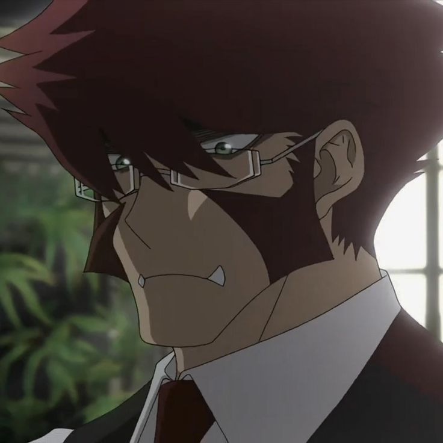

Libra's members operate both inside and outside the city and are typically blood-technique users or some description of super-human. The full scope of the organisation is unknown and, due to its secretive nature, precise information regarding the organisation is said to be worth billions to the criminal underworld. Law-enforcement agencies within Hellsalem's Lot also appear to be after Libra, probably due to their vigilante activities. However, the police have been shown to co-operate with Libra in severe circumstances to achieve a common goal.
Libra was presumably founded by Klaus Von Reinherz shortly after the portal to the Alter World opened. Since then, its membership has expanded to include all of the members listed above. Three years after the Great Collapse, Leonardo Watch became a member of Libra through a misunderstanding, with Zed O'Brien becoming a member shortly afterwards.
Meet our member
Leonardo Watch
Leonardo Watch (レオナルド・ウォッチ, Reonarudo Wocchi) is the
primary protagonist of the series. He is a photographer who came
to Hellsalem's Lot to help his younger sister, Michella Watch.
Upon visiting Hellsalem's Lot, an entity known as Riga El Menuhyut
gave him the "All-Seeing Eyes of the Gods" at the cost of his
younger sister's eyesight.

Klaus von Reinherz
Klaus Von Reinherz (クラウス・Vフォン・ラインヘルツ Kurausu Fon Rainherutsu?) is the leader of Libra and young head of the noble Reinherz family. Known for his gentlemanly composure, honest to a fault nature and unshakable will, he typically conducts himself in a calm, polite manner unless suitably angered, in which case he will lash out with a beast-like level of savagery.
Zapp Renfro
Zapp Renfro (ザップ・レンフロ, Zappu Renfuro) is a member of the Libra organization and master of the Big Dipper blood fighting style along with Zed O'Brien who was taught by Raju Jugei Shizuyoshi. Described as a hotheaded, hyper-sexual juvenile punk, he is easily annoyed and quick to lose his temper; his juvenile actions often get him and others into trouble.
Despite this, he is supposedly good at looking after new members, and so was assigned as Leo's partner/bodyguard. He is also something of a ladies man, possessing several lovers in town.
Chain Sumeragi
Chain Sumeragi (チェイン・皇（すめらぎ Chein Sumeragi), is an 'Invisible Werewolf' and a member of the Werewolf Bureau that was assigned to Libra. Despite this, she can also be quite sadistic, often causing physical harm to others, usually Zapp Renfro, with whom she doesn't get along. However, she does show some protectiveness towards her friends, as shown when she refused to give her friend Angelica's phone number to Zapp who kept pestering her.